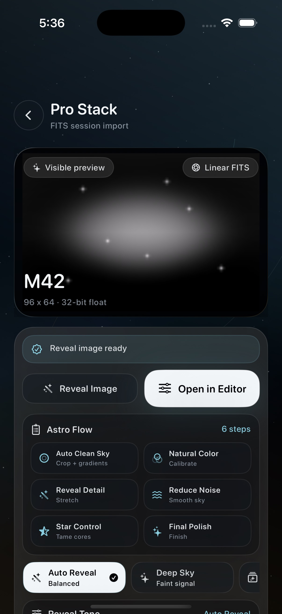

Start with a clean first pass.
Apply a balanced look for telescope captures, then fine tune exposure, contrast, color, denoise, detail, and stars.
Astro photo editor for iPhone
AstroFinish helps you import telescope captures, reveal faint nebula detail, reduce noise, tame stars, and export a finished image without sending your photos to the cloud.

What it does
Import one capture, a batch, or a FITS session. Then use presets and focused astro controls to get from faint data to a finished image.
Apply a balanced look for telescope captures, then fine tune exposure, contrast, color, denoise, detail, and stars.
Use nebula reveal, sky background, star reduction, and color correction controls built around astro photos.
Preview linear FITS data, reveal the image, and move into finishing controls without leaving your iPhone.
Queue multiple images, apply looks consistently, and export finished photos for sharing or archiving.
Screenshots
These screenshots are shown uncropped so App Review and customers can see the actual app UI.


From faint to finished
AstroFinish is built around visual editing, not technical setup. Open a capture, choose a look, compare your changes, then refine the details that matter for astrophotography.
Privacy Policy
AstroFinish is built for editing astronomy images on your device. The app does not require an account, does not include advertising or analytics SDKs, and does not upload your photos to AstroFinish servers.
AstroFinish does not collect personal data from the app. There are no AstroFinish accounts, analytics events, advertising identifiers, tracking domains, or cloud sync services in the app.
Imported images are used to provide editing and export features. AstroFinish requests Photos permission only when saving finished output or creating/finding the AstroFinish Exports album. Original imported files are not overwritten.
If you paste an HTTP or HTTPS download link, AstroFinish contacts that link to download the selected FITS or ZIP file into app-local storage. The website or telescope service hosting that link may receive ordinary request information, such as your IP address, under its own privacy practices.
AstroFinish may store app-only settings, user presets, recent edit metadata, thumbnails, and purchase unlock status locally on your device. This information is used for app functionality and is not transmitted to AstroFinish.
If AstroFinish offers an in-app purchase, payment and refund handling are processed by Apple. AstroFinish does not receive or store your payment card details.
You can manage Photos access in the iOS Settings app. You can remove local AstroFinish data by deleting the app from your device. For app support or privacy questions, use the support contact provided with AstroFinish on the App Store listing.
If AstroFinish's privacy practices change, this policy and the App Store privacy details should be updated before submitting a new build or app update.
Download AstroFinish
Import telescope images, edit FITS sessions, polish deep-sky detail, and export locally from your iPhone.